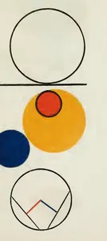

Book III — Circles, Inscribed Angles & Tangent-Secant Power¶
Cyclic Angles, Semicircular Right Angles & Power of a Point (Pickering pp. 71–122, Leaves 105–156)
Book III investigates the incidence and angular geometry of circles, culminating in three foundational theorems rendered with crystalline economy in Byrne’s four-color notation: central-to-inscribed angle doubling (III.20), Thales’s semicircle theorem (III.31), and the tangent-secant power of an external point (III.36).
Definitions in Book III¶

Book III Definitions (I–X)
Definition I: Equal circles are those of which the diameters are equal, or from the centres of which the straight lines to the circumferences are equal.
Propositions in Book III¶
Proposition III.1 — Finding the Centre of a Circle
To find the centre of a given circle .
Proposition III.2 — Chord Lies Wholly Within the Circle
A straight line () joining two points in the circumference of a circle , lies wholly within the circle.
Proposition III.3 — Diameter Bisects a Chord Perpendicularly
If a straight line () drawn through the centre of a circle bisects a chord ((solid red + dotted red line)) which does not pass through the centre, it is perpendicular to it; or, if perpendicular to it, it bisects it.
Proposition III.4 — Non-Diametral Chords Do Not Bisect Each Other
If in a circle two straight lines cut one another, which do not both pass through the centre, they do not bisect one another.
Proposition III.5 — Intersecting Circles Are Not Concentric
If two circles (blue circle and red circle intersecting) intersect, they have not the same centre.
Proposition III.6 — Internally Touching Circles Are Not Concentric
If two circles (black circle inside red circle touching internally) touch one another internally, they have not the same centre.
Proposition III.7 — Segments from a Non-Central Interior Point
If from any point within a circle which is not the centre, lines {, , } are drawn to the circumference; the greatest of those lines is that ((solid+dotted black line)) which passes through the centre, and the least is the remaining part () of the diameter. Of the others, that () which is nearer to the line passing through the centre, is greater than that () which is more remote. Fig. 2. The two lines ((solid+dotted blue line) and ) which make equal angles with that passing through the centre, on opposite sides of it, are equal to each other; and there cannot be drawn a third line equal to them, from the same point to the circumference.
Proposition III.8 — Secants and Tangents from an Exterior Point
If from a point without a circle, straight lines {(solid+dotted black line), , &c.} are drawn to the circumference; of those falling upon the concave circumference the greatest is that ((solid+dotted black line)) which passes through the centre, and the line () which is nearer the greatest is greater than that () which is more remote. II. Of those lines falling on the convex circumference the least is that () which being produced would pass through the centre, and the line which is nearer to the least is less than that which is more remote. III. Also the lines making equal angles with that which passes through the centre are equal, whether falling on the concave or convex circumference; and no third line can be drawn equal to them from the same point to the circumference.
Proposition III.9 — Point with Three Equal Segments Is the Centre
If a point be taken within a circle , from which more than two equal straight lines (, , ) can be drawn to the circumference, that point must be the centre of the circle.
Proposition III.10 — Two Circles Intersect in at Most Two Points
One circle cannot intersect another in more points than two.
Proposition III.11 — Line of Centres Passes Through Internal Contact
If two circles and touch one another internally, the right line joining their centres, being produced, shall pass through a point of contact.
Proposition III.12 — Line of Centres Passes Through External Contact
If two circles and touch one another externally, the straight line (red-black-blue line) joining their centres, passes through the point of contact.
Proposition III.13 — Circles Touch in at Most One Point
One circle cannot touch another, either externally or internally, in more points than one.
Proposition III.14 — Equal Chords Are Equidistant from the Centre
Equal straight lines ((solid red and dotted yellow lines)) inscribed in a circle are equally distant from the centre; and also, straight lines equally distant from the centre are equal.
Proposition III.15 — Diameter Greatest and Closer Chords Greater
The diameter is the greatest straight line in a circle: and, of all others, that which is nearest to the centre is greater than the more remote.
Proposition III.16 — Perpendicular at Diameter Extremity Is Tangent
The straight line drawn from the extremity of the diameter of a circle perpendicular to it falls without the circle. And if any straight line be drawn from a point within that perpendicular to the point of contact, it cuts the circle.
Proposition III.17 — Drawing a Tangent from an Exterior Point
To draw a tangent to a given circle from a given point, either in or outside of its circumference.
Proposition III.18 — Radius to Point of Contact Is Perpendicular
If a right line be a tangent to a circle, the straight line drawn from the centre to the point of contact, is perpendicular to it.
Proposition III.19 — Perpendicular to Tangent Passes Through Centre
If a straight line be a tangent to a circle, the straight line , drawn perpendicular to it from point of the contact, passes through the centre of the circle.
Proposition III.20 — Central & Inscribed Angles
The angle at the centre of a circle is double the angle at the circumference, when they have the same part of the circumference for their base.
Proposition III.21 — Angles in the Same Segment Are Equal
The angles (, ) in the same segment of a circle are equal.
Proposition III.22 — Opposite Angles of a Cyclic Quadrilateral
The opposite angles (red/blue split angle) and (yellow/black split angle), (black/blue split angle) and (yellow/red split angle) of any quadrilateral figure inscribed in a circle, are together equal to two right angles.
Proposition III.23 — Similar Unequal Segments Cannot Stand on Same Chord
Upon the same straight line, and upon the same side of it, two similar segments of circles cannot be constructed which do not coincide.
Proposition III.24 — Similar Segments on Equal Chords Are Equal
Similar segments (red segment with blue arc and black base) and (yellow segment with red arc and blue base), of circles upon equal straight lines ( and ) are each equal to the other.
Proposition III.25 — Completing a Circle from a Given Segment
A segment of a circle being given, to describe the circle of which it is the segment.
Proposition III.26 — Equal Angles Stand on Equal Arcs
In equal circles and , the arcs , on which stand equal angles, whether at the centre or circumference, are equal.
Proposition III.27 — Angles Standing on Equal Arcs Are Equal
In equal circles, an the angles and which stand upon equal arches are equal, whether they be at the centres or at the circumferences.
Proposition III.28 — Equal Chords Cut Off Equal Arcs
In equal circles and , equal chords , cut off equal arches.
Proposition III.29 — Equal Arcs Are Subtended by Equal Chords
In equal circles and the chords and which subtend equal arcs are equal.
Proposition III.30 — Bisecting a Given Circumference
To bisect a given arc (solid+dotted red arc).
Proposition III.31 — Angle in a Semicircle (Thales’s Theorem)
In a circle the angle in a semicircle is a right angle, the angle in a segment greater than a semicircle is acute, and the angle in a segment less than a semicircle is obtuse.
Proposition III.32 — Alternate Segment Theorem (Tangent-Chord Angle)
If a right line be a tangent to a circle, and from the point of contact a right line be drawn cutting the circle, the angle made by this line with the tangent is equal to the angle in the alternate segment of the circle.
Proposition III.33 — Segment Containing an Angle Equal to a Given Angle
On a given straight line to describe a segment of a circle that shall contain an angle equal to a given angle (right angle outline, obtuse angle outline, black acute angle).
Proposition III.34 — Cutting Off a Segment Containing a Given Angle
To cut off from a given circle a segment which shall contain an angle equal to a given angle .
Proposition III.35 — Intersecting Chords Power Theorem
If two chords {(solid blue + dotted blue line), (solid black + dotted black line)} in a circle intersect each other, the rectangle contained by the segments of the one is equal to the rectangle contained by the segments of the other.
Proposition III.36 — Tangent-Secant Power of a Point
If from a point without a circle two straight lines be drawn to it, one of which is a tangent to the circle, and the other ( + + ) cuts it; the rectangle under the whole cutting line and the external segment is equal to the square of the tangent .
Proposition III.37 — Converse of Tangent-Secant Power
If from a point outside of a circle two straight lines be drawn, the one (solid black + dotted black line) cutting the circle, the other meeting it, and if the rectangle contained by the whole cutting line (solid black + dotted black line) and its external segment be equal to the square of the line meeting the circle, the latter is a tangent to the circle.